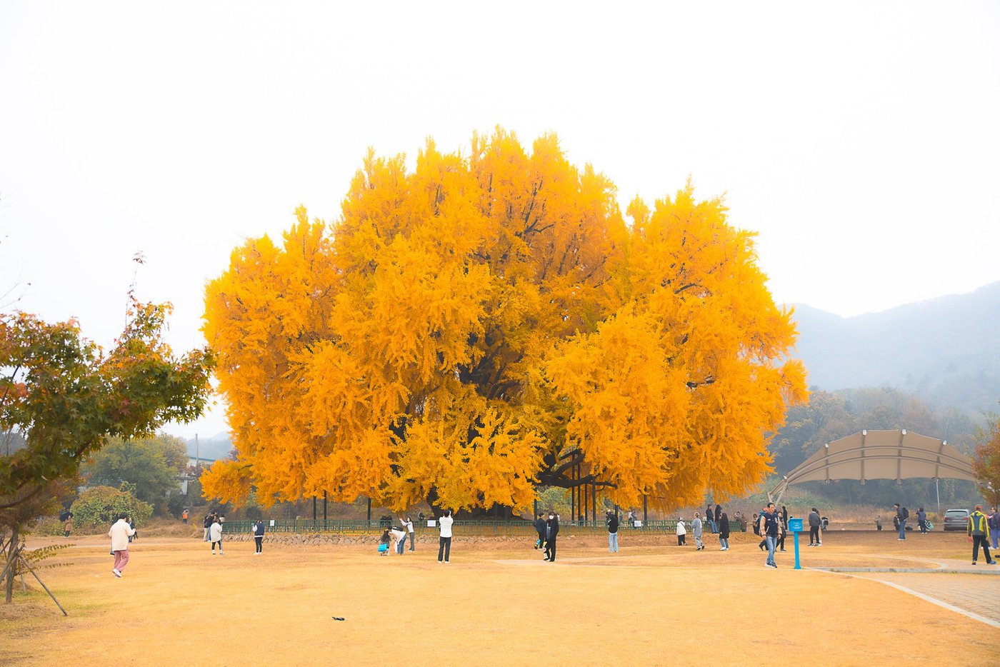

Kitchen · Local · Stories
밥상 위의 작은 궁금증,
같이 풀어봐요
떡이 딱딱해져서 막막했던 순간의 해결법부터, 밥상에서 시작해 우리 지역 곳곳으로 떠나는 축제 소식과 맛 이야기, 옛이야기까지 쉽고 따뜻하게 모았습니다.

- 출처를 확인한 정보
- 바로 따라 하는 방법
- 밥상에서 지역까지

2026 단풍 절정 시기 — 설악산·오대산·치악산·내장산·주왕산·지리산 언제 가면 좋을까
올해 첫 단풍은 9월 28일 설악산에서 시작됐는데요. 10월 15일 기준으로 오대산·치악산·내장산·주왕산·지리산의 절정 예상 시기와 평년 비교, 은행나무 단풍 시기, 붐비는 주말 피하는 요령까지 확인된 자료만 담았습니다.

용문사 은행나무 전설 — 마의태자가 심었을까, 의상대사의 지팡이였을까
양평 용문사 은행나무에는 마의태자가 심었다는 이야기와 의상대사의 지팡이가 자랐다는 이야기가 전해 오는데요. 천연기념물로 확인되는 수치와 전설을 나누어 들려 드립니다.

원주 반계리 은행나무 2026 — 단풍 시기, 축제 소식, 버스와 주차 안내
원주 문막읍 반계리 은행나무의 올가을 단풍 전망, 축제 소식, 주말 버스와 주차 정보를 10월 15일 기준으로 확인해 봤어요. 천연기념물 제167호의 나이와 전설도 담았는데요, 확인하지 못한 것은 못 했다고 적었습니다.

에밀레종 전설 — 성덕대왕신종에 얽힌 이야기와 과학이 밝힌 사실
아이를 넣어 만들었다는 에밀레종 전설, 한 번쯤 들어 보셨죠. 성덕대왕신종이 만들어진 역사와 비천상, 맥놀이, 성분 분석으로 확인된 사실까지 한국민족문화대백과사전과 국립경주박물관 조사 보도를 바탕으로 차근차근 정리했습니다.

전주 콩나물국밥 이야기 — 남부시장식과 끓이는 식, 수란과 모주까지
전주에 가면 아침 한 그릇으로 꼭 찾게 되는 콩나물국밥 이야기인데요. 1929년 잡지에 실린 '탁백이국'부터 남부시장식과 끓이는 식의 차이, 수란과 모주를 곁들이는 법까지 백과사전과 관광공사 자료로 확인해 담았습니다.

오대산 상원사 문수동자와 세조 이야기 — 계곡에서 등을 밀어 준 아이, 목숨을 구한 고양이
오대산 상원사에는 세조가 계곡에서 문수동자를 만나 피부병을 고쳤다는 전설이 전해지는데요. 관대걸이와 고양이 석상 이야기, 실록과 국보 문수동자상·동종으로 확인되는 기록을 전설과 나누어 정리하고, 월정사에서 선재길로 이어 걷는 법까지 담았습니다.

등산 도시락 싸는 법 — 단풍놀이 가는 날 상하지 않게, 김밥은 터지지 않게
가을 산행 도시락은 선선하다고 방심하기 쉬운데요. 식약처 안내에 따라 식혀서 담고 아이스팩을 넣는 법, 김밥이 마르거나 터지지 않게 싸는 요령, 산에서 지켜야 할 취사·쓰레기 규칙까지 하나하나 짚어 드립니다. 단풍놀이 전에 읽어 보세요.

은행 손질법 — 겉껍질 장갑, 팬에 볶아 속껍질 벗기기, 보관과 하루 섭취량
은행은 냄새 나는 겉껍질을 장갑 끼고 벗기고, 반드시 익혀서 드셔야 합니다. 껍질 까는 순서와 팬에 볶는 법, 냉장·냉동 보관, 식약처가 알린 하루 섭취량, 길에서 주워 올 때 살필 점까지 하나하나 차근차근 알려 드려요.

콩나물 보관법 — 물에 담가 냉장, 데쳐서 냉동, 비린내 없이 데치는 뚜껑 요령
콩나물은 금방 무르고 쉰내가 나기 쉬운 채소라, 사 온 날 어떻게 두느냐가 중요합니다. 봉지째 둬도 되는 경우와 물에 담가 냉장하는 법, 데쳐서 얼리는 요령, 비린내 안 나게 뚜껑 다루는 법, 싱싱한 콩나물 고르는 법까지 알려 드려요.

참기름 들기름 보관법 — 들기름은 냉장, 참기름은 서늘한 실온, 산패 냄새 구별법
들기름은 참기름보다 훨씬 빨리 산패해서 냉장고에 두는 게 좋습니다. 참기름은 빛이 들지 않는 서늘한 곳이면 충분한데요. 두 기름이 왜 다르게 보관되는지, 병과 뚜껑 관리, 소분하는 요령, 쩐내로 산패를 알아보는 법까지 알려 드려요.

냉장고 냄새 없애는 법 — 원인 찾기, 청소 순서, 베이킹소다·커피 탈취
냉장고 냄새는 탈취제보다 원인부터 치우는 게 먼저입니다. 상한 음식과 흘린 국물을 찾는 법, 선반과 고무 패킹 청소 순서, 베이킹소다·커피·숯을 제대로 쓰는 법, 냄새가 다시 배지 않게 두는 습관과 냉장고 적정 온도까지 차근차근 알려 드려요.

귤 보관법 — 상자째 받은 귤 오래 두는 법, 곰팡이 귤 골라내기, 냉동귤
귤을 상자째 받으면 무른 귤부터 골라내고, 서늘한 곳이나 냉장고에 나눠 두시면 됩니다. 곰팡이가 옆 귤로 번지기 전에 살필 점, 신문지 까는 법, 냉장 온도와 냉동귤 만드는 법, 맛있는 귤 고르는 요령까지 차근차근 알려 드려요.